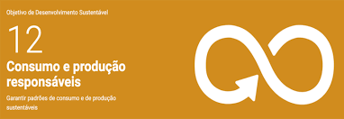

Sociedade

ODS 10 - Redução das Desigualdades
Acaba sendo observada quando os Addams são julgados apenas por serem
diferentes, mas mesmo assim, eles continuam firmes na própria identidade,
mostrando como é importante respeitar e valorizar a diversidade.

ODS 12 - Consumo e Produção Responsáveis
Surge na crítica que o filme faz ao consumismo exagerado, demonstrando
que enquanto o “mundo normal” vive em busca de status e aparência, os
Addams focam no essencial: amor, união e respeito dentro da família,
provando que dá para viver de um jeito simples, autêntico e sem precisar
agradar ninguém.